Now that you have tweaked your pages, it’s time to learn how to build a unique menu or MegaMenu.
In order to build a beautiful MegaMenu, you will first need to create a new menu. Go to the left side of the WP-Admin panel, find “Appearance,” then “Menus”.
Now click the + option on the top right menu navigation bar to create a new menu. For this demonstration, we have called our “megamenu”.
**Important – use all lowercase letters. Notice also that we have changed the “Theme Location” (right) to “megamenu”.
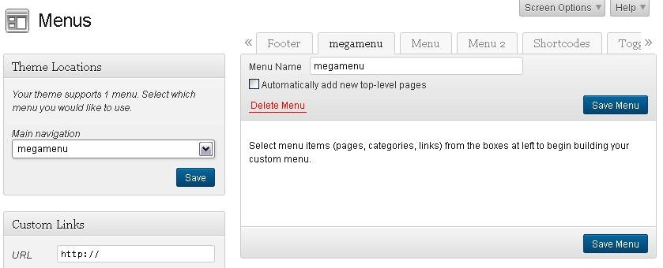
Be sure to CLICK SAVE.
Now scroll up and find the “Screen Options” at the top right of the Menu, and click on the drop-down arrow: Now the screen looks like this:
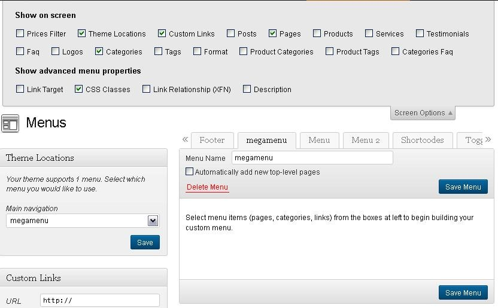
No matter what other items are checked, to create a MegaMenu, you MUST click/check the CSS CLASSES box.
CLICK “SAVE MENU” and close the Screen Options view.
Next, choose the Pages that will show on your MegaMenu. To do this, scroll to the bottom left of your Menus page and find “Pages”. Click on the Pages you want to show. **Note - Sometimes only the “Most Recent” pages show. Click “View All” to show all your pages. Here is a screenshot of the pages we added:
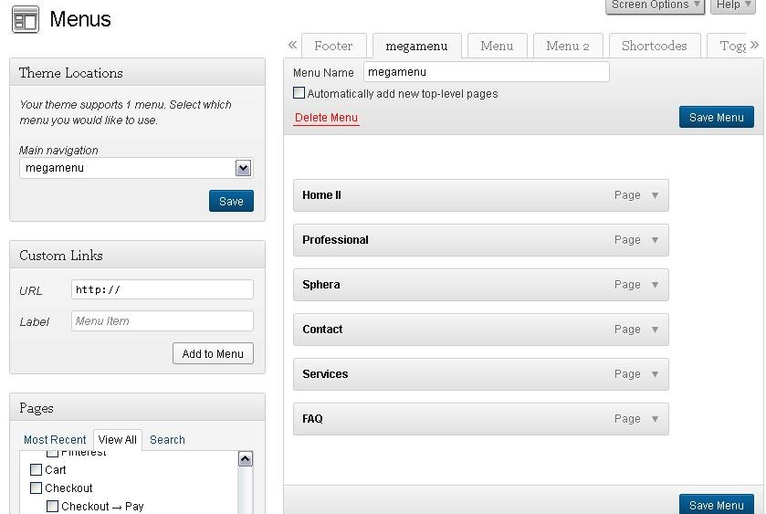
**Note – the pages are in random order. This is how they will show on the Navigation Bar:
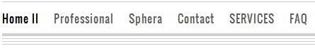
We DON’T want our pages in random order, so we will now return to the Menu Page and drag the pages to the order we desire. Remember to click each drop-down button to change the names of the pages you have chosen (as demonstrated in Section 5 – Menus). Below, we changed several names:
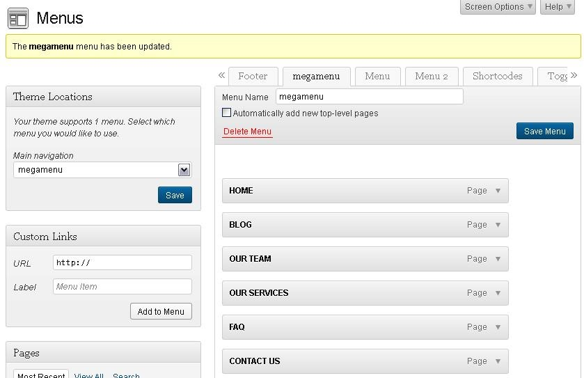
Now our Navigation Bar looks like this:
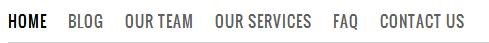
Now we can begin the MegaMenu. To follow the link to the detailed MegaMenu video created by YIThemes, sign into YIThemes.com, - click on Home, scroll down to Themes and click on the second item, entitled Bazar Video Tutorials:
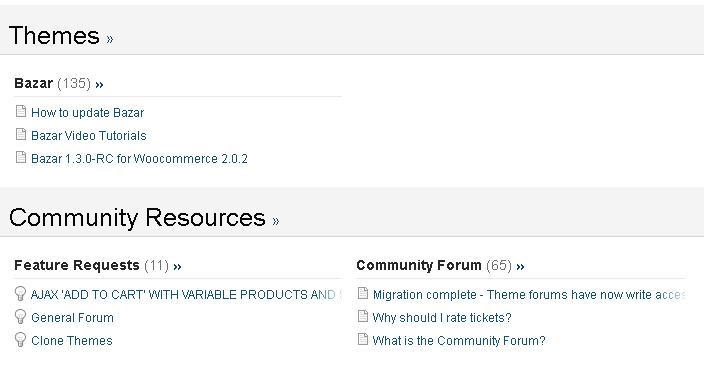
When you click Bazar Video Tutorials, you will see the following page. Click Item 1.8, which will take you to the MegaMenu video.
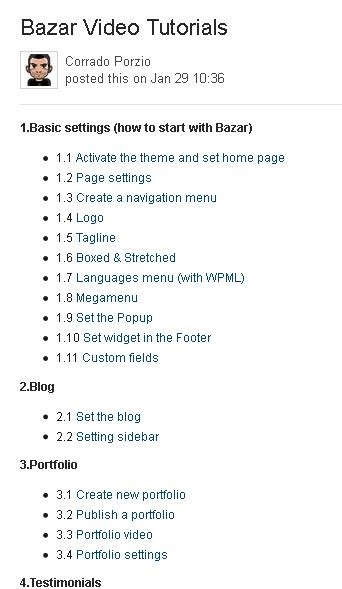
Watch the video as many times as you need in order to understand how to create the MegaMenu.
Now, go back to your “Menus” page and scroll to the “Custom Links” section on the middle left. Change the “URL” to “#”, and change the label to whatever you want in your menu. In our example, we will change the label to “Shop By”.
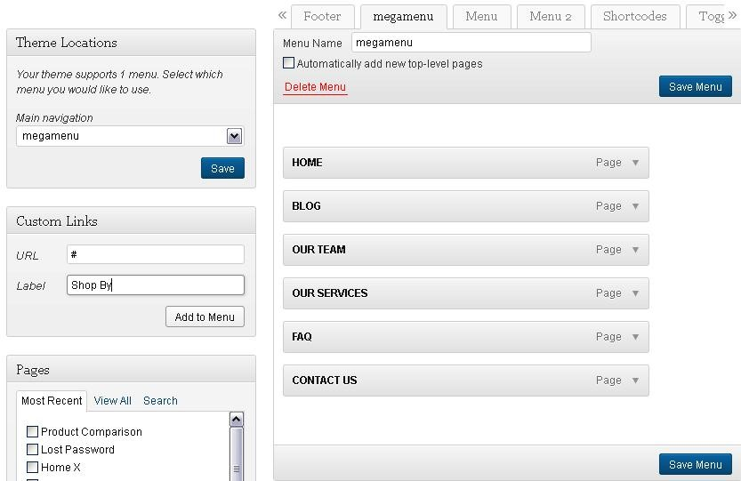
Now click “Add to Menu”, and “Shop By” will appear on your menu.
Drag it in the order you want it to appear on your Navigation bar.
Next, click on the drop-down arrow of the “Shop By” icon, and when the screen opens up, find “CSS Class” and type “megamenu”.
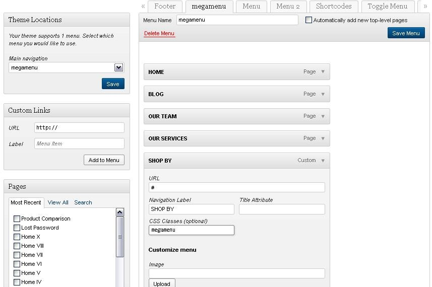
Now decide what Categories you want to list under “Shop By.” In our demonstration, we will begin with “Genre” so users can shop for books via Genre.
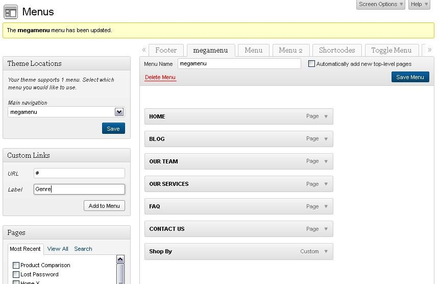
After clicking “Add to Menu,” the “Genre” Category appears on the menu, and we arrange it under the “Shop By” category:
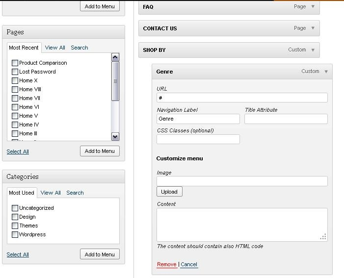
Now we can add some Sub-Categories under “Genre”. We will add “ER & Pre-K, K-3, MG, YA, Adult.
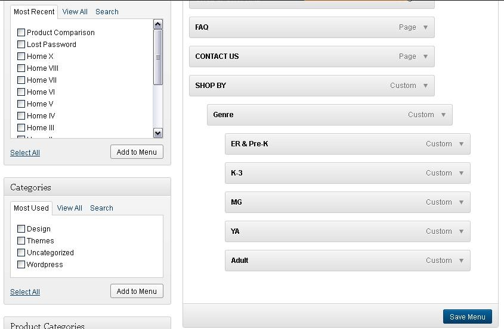
Now we will add a new Category called “Media” so that users can shop for their books via different media:
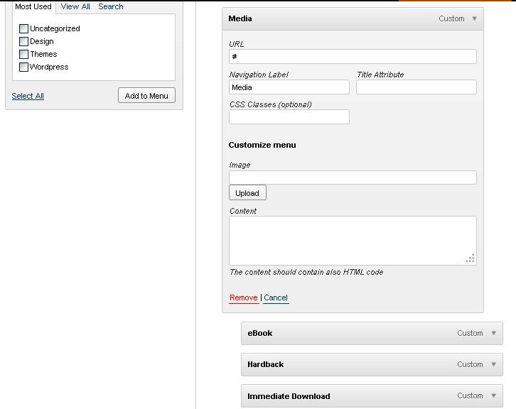
Here is what our Menu looks like after adding the Media Category and several Sub-Categories:
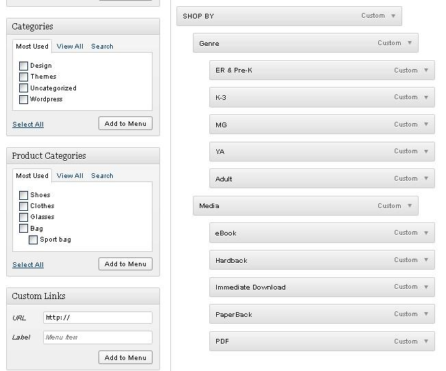
Now CLICK SAVE, then navigate to your Home Page. Here is a visual of our new Navigation Bar with all the pages we’ve chosen, and with the “Shop By” MegaMenu.
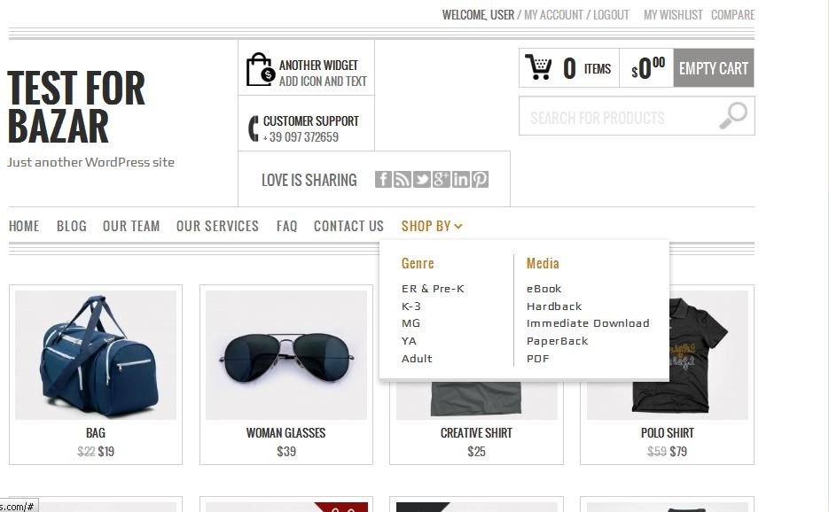
You may continue to experiment with your MegaMenu, including adding images to it, and so forth.